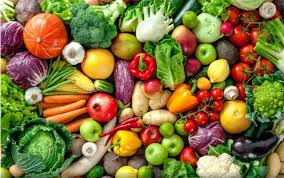

Explorez par Catégories


Explorez la diversité incroyable du règne végétal et apprenez à cultiver votre propre potager avec nos guides pratiques.
Commencer l'explorationDe la découverte à la culture, tout ce dont vous avez besoin pour comprendre et faire pousser le monde végétal.
Base de données complète de végétaux du monde entier
Conseils détaillés pour réussir vos cultures
Organisés par catégories pour faciliter la recherche
Démarrez votre potager avec des variétés simples
Apprenez à cultiver vos propres fruits et légumes avec nos guides détaillés.